7.1 Hagyományos grafika
Az Alap R számos eljárást ad a grafikus ábrák létrehozására, sőt saját ábratípusokat is létrehozhatunk. A parancssorba gépelt demo(graphics) vagy demo(persp) függvényhívásokkal képet kaphatunk az R grafikus lehetőségeiről.
Az R segítségével grafikus eszközre (graphical device) rajzolhatunk, amely alapértelmezetten a képernyő, de egy adott típusú állomány is lehet. A grafikus (rajz)függvényeink két alapvető csoportba sorolhatók:
- magas-szintű (high-level) rajzfüggvények,
- alacsony-szintű (low-level) rajzfüggvények.
A hagyományos grafika jellemzője, hogy grafikus paramétereket használ a rajzolás közben. Ezekről a paraméterekről a ?par segítségével kapunk teljes listát, beállításuk és lekérdezésük a par() függvénnyel lehetséges. Például ha a bg= paraméter alapértelmezett fehér értékét megváltoztatjuk szürkére vagy kékre, akkor ugyanaz a rajzfüggvény háttérszínben eltérő ábrát fog létrehozni.
Az alapértelmezett háttérszín értékét ne felejtsük visszaállítani: par(bg="white").
7.1.1 Grafikus eszközök
Az R-ben megnyithatunk egy vagy több grafikus eszközt, ezekből mindig az egyik az aktuális (aktív), amelyre a grafikus függvényeinkkel rajzolhatunk. Az alapértelmezett grafikus eszközünk az R-ben a képernyő egy ablaka (windows), de több állománytípus (pl. jpeg, pdf, postscript) áll rendelkezésre, amelyekben létrehozhatjuk ábráinkat. A grafikus eszközök leírását a ?device paranccsal érhetjük el.
Grafikus eszközt a típusuknak megfelelő függvényhívással hozhatunk létre. A következő sorban két windows és egy jpeg típusú grafikus eszközt hozunk létre:
Az dev.list() függvénnyel a megnyitott grafikus eszközeink listáját kapjuk meg: az eszköz típusát és azonosítóját látjuk a képernyőn. Az első megnyitott eszközünk 2-es azonosítót kapja.
A megnyitott eszközeink egyike az aktuális grafikus eszköz, az utoljára megnyitott eszköz lesz az aktuális. Az aktuális eszközt a dev.cur() függvénnyel kérdezhetjük le, beállítása a dev.set() függvénnyel lehetséges:
A grafikus eszközök bezárását a dev.off() függvény végzi. Paraméter nélkül az aktuális eszközt zárhatjuk be, numerikus paraméterrel pedig az adott sorszámú eszközt. A visszatérési értéke az aktuális grafikus eszköz. A graphics.off() az összes nyitott eszközt bezárja:
7.1.2 Az eszközfelület felosztása
Nagyon hasznos lehetőség az R-ben, hogy a rajzterület felosztható különálló részekre (ablakokra), melyek mindegyikére a többitől függetlenül rajzolhatunk. A felosztásra több lehetőségünk is van, ezek nem minden esetben kompatibilisek egymással.
A legegyszerűbben a mfrow= vagy mfcol= grafikus paramétereket használhatjuk a felosztásra, egy kételemű numerikus vektor lehet az értékük, amelyek a felosztott ablakok sorainak és oszlopainak a számát határozzák meg.
A fenti sor hatására egy 3 sorból és 2 oszlopból álló, 6 elkülönült ablakot tartalmazó rajzterületet kapunk. Az mfrow= esetén a felosztás soronként, az mfcol= esetén pedig oszloponként történik.
Az aktuális felosztásról a layout.show() függvény ad tájékoztatást:
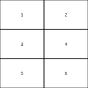
A függvény sorszámokkal azonosítja a különböző rajzterületeket, így azok beazonosíthatók, nagyságuk és elhelyezkedésük az ábráról leolvasható.
A fenti felosztás az mfcol= paraméter beállításával is elérhető, de ekkor a rajzterületek kiosztása oszloponként történik:
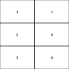
A felosztott rajzterületekre az ábrák rajzolása az azonosítók sorrendjében történik, először az 1-es sorszámú rajzterületre rajzolunk, majd a következő magas-szintű függvényhívás a 2-es sorszámú rajzterületre rajzol, és így tovább.
Ritkán előfordul, hogy a fenti sorrendet felül szeretnénk bírálni és azt szeretnénk, hogy a következő magas-szintű függvényünk egy adott (nem a sorrendben következő) rajzterületre vonatkozzon. Ekkor az mfg= paramétert használhatjuk az aktuális rajzterület beállítására.
par(mfrow=c(2,3), bg="lightgreen")
plot(1:10) # ábra az 1,1 pozícióba
par(mfg=c(2,3,2,3))
plot(1:10) # ábra a 2,3 pozícióba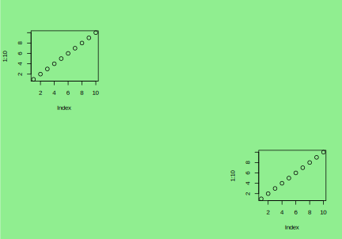
A fenti példában arról rendelkezünk, hogy a 2. sor 3. oszlopába kerüljön a következő ábra. A 4 elemű numerikus vektor utolsó két értéke csak megismétli a felosztás tényét, miszerint a rajzterület 2 sor és 3 oszlop mentén lett felosztva.
A felosztás megszüntetése az egy sorból és egy oszlopból álló “felosztás” beállítását jelenti:
A rajzterület rugalmasabb felosztását teszi lehetővé a layout() függvény, amely a paraméterében szereplő mátrix értékei mentén végzi a felosztást. A rajzterület részei eltérő méretűek is lehetnek, valamint gondoskodhatunk az egymás melletti részek egyesítéséről is.
A mfcol= paraméter használatánál szereplő felosztást a következő layout() függvényhívás hajtja végre:

Ha eltérő nagyságú területekre szeretnénk felosztani a rajzunkat, akkor a widths= és a heights= paraméterekkel állíthatjuk be az oszlopok és a sorok egymáshoz viszonyított arányát.
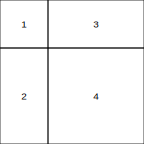
A felosztás itt egy 2x2-es mátrix alapján történik, ahol a widths= paraméter a két oszlop szélességét állítja be: a második oszlop az első oszlop szélességének kétszerese. A heights= paraméter hasonlóan határozza meg a sorok magasságát.
A layout() függvény első paraméterében szereplő mátrix azonos értékeket is tartalmazhat, ekkor egymás melletti rajzterületek összevonására van lehetőségünk:
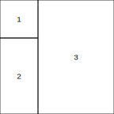
A fenti két felosztási módszertől alapjaiban eltérő a split.screen() függvénnyel történő felosztás.
A példában 2 sor és 1 oszlop mentén a rajzterületet egy felső és alsó részre osztottuk. Ezek azonosítója a visszatérési értéknek megfelelően 1 és 2. Az azonosítókat felhasználhatjuk az adott rajzterület továbbosztásához:
A 2-es rajzterületet osztjuk 1 sor és 3 oszlop mentén három egyenlő részre, ezek új azonosítóival tér vissza a függvény. A rajzterület kiválasztását a screen() függvénnyel végezzük, paraméterben egy rajzterület azonosítóját kell megadnunk. Rajzterület tartalmát az erase.screen() függvénnyel törölhetjük, a rajzterület felosztásából a close.screen() függvénnyel léphetünk ki.
7.1.3 Az eszközfelület részei
Az eszközfelületen egyetlen ábra létrehozásakor a következő részeket különböztethetjük meg: külső margó, ábraterület, belső margó, rajzterület. A 7.1 ábrán belülről kifelé haladva a rajzterület és a belső margó látható, melyek együtt egy olyan ábraterületet alkotnak, amely teljesen kitölti az eszközfelületet. Külső margó alapértelmezés szerint nincs, ezt magunknak kell beállítani.
ÁBRA 7.1: Az eszközterület részei (külső margó nélkül)
A rajzterületre kerülnek az ábrázolandó pontok, vonalak, görbék, 2 és 3 dimenziós alakzatok. A belső margón foglal helyet az ábra címe és alcíme, a tengelyek feliratai, a beosztások címkéi és maguk a beosztások is. A rajzterület és a belső margó határán helyezkedik el a két tengely, valamint a rajzterületet körbevevő szegély is.
A belső margók a mai= (inch-ben mért) és mar= (szövegsorokban mért) paraméterek segítségével kérdezhetők le és állíthatók be.
## $mai
## [1] 1.02 0.82 0.82 0.42
##
## $mar
## [1] 5.1 4.1 4.1 2.1A kapott értékek rendre az alsó, bal oldali, felső és jobb oldali margókat jelentik.
A külső margók az omi= és az oma= paraméterek segítségével kezelhetők és mint láttuk alapértelmezetten nem kerülnek beállításra:
## $omi
## [1] 0 0 0 0
##
## $oma
## [1] 0 0 0 0Az omi= az inch-ben mért, az oma= pedig a szövegsorban mért margónagyságot határozza meg. Ha 2 szövegsornyira állítjuk mindegyik külső margót
## $omi
## [1] 0.4 0.4 0.4 0.4
##
## $oma
## [1] 2 2 2 2akkor az eszközfelület a 7.2 ábrának megfelelően épül fel.
ÁBRA 7.2: Az eszközterület külső margóval
A margókban (külső vagy belső) szöveges információt az mtext() függvénnyel helyezhetünk el. Az side= paraméter a margó kiválasztását jelenti (1=alsó, 2=bal, 3=felső, 4=jobb), a line= paraméterrel a margó szövegsorát adjuk meg (0-val kezdődik), az outer= paraméter pedig a külső vagy belső margó közötti választásról gondoskodik (TRUE=külső margó, FALSE=belső margó). A külső és belső margóba írhatunk a következő parancsokkal:
A belső és külső margóba írható szövegsorokról a 7.3 ábra tájékoztatást. Az mtext() függvény line= paramétere határozza meg a szöveg helyét, az adj= paraméter a szöveg igazítását (a tengelyekkel párhuzamos irányban az adj=0 balra igazít, adj=1 jobbra igazít).
ÁBRA 7.3: Szövegsorok a külső és belső margón
Amennyiben az eszközfelületünket több ablakra osztjuk az alapértelmezett felosztásban az ablakokban egy-egy ábraterület található, amelyek belső margóval és rajzterülettel rendelkeznek (7.4. ábra).
ÁBRA 7.4: Szövegsorok a külső és belső margón
A külső margó most is hiányzik, de a szokásos grafikus paraméterek segítségével beállíthatjuk, ekkor a 7.5 ábrának megfelelő felosztást kapjuk.
ÁBRA 7.5: Szövegsorok a külső és belső margón
Természetesen a margókba most is írhatunk tetszőleges szöveget az mtext() függvény segítségével a 7.6 ábrának megfelelően.
ÁBRA 7.6: Szövegsorok a külső és belső margón
7.1.4 Magas-szintű rajzfüggvények
A magas-szintű rajzfüggvények az aktív grafikai eszközön hoznak létre új ábrát, ami a legtöbbször a régi tartalom törlésével jár. Az ábrához többek között tengelyek, címkék és feliratok tartoznak, amelyek megjelenítéséről a grafikai paraméterekkel gondoskodhatunk.
A legtöbbször használt magas-szintű függvények:
stripchart()- egydimenziós pontdiagramplot()- kétdimenziós pontdiagram, vonaldiagramhist()- hisztogrambarplot()- oszlopdiagramboxplot()- dobozdiagramcurve()- függvény ábrázolásapie()- kördiagram
7.1.4.1 A stripchart() függvény
A stripchart() legegyszerűbb formájában egyetlen numerikus változó értékeit jeleníti meg, horizontálisan, egymásra rajzolt négyzet pontkarakterekkel. A MASS csomag survey adatbázisát használjuk, és testmagasságokat jelenítünk meg cm-ben mérve.
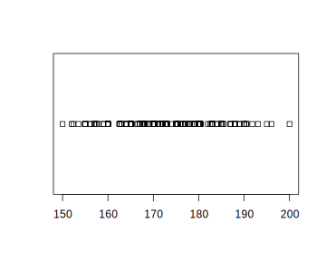
A horizontális megjelenítést vertikálisra (vertical = T), a négyzetet pedig színezett pontokra cseréljük (pch=21, col="blue", bg="lightblue"), és elvetjük a pontok egymásra rajzolását (method = "jitter").
library(MASS)
stripchart(x = survey$Height, vertical = T, pch=21, col="blue", bg="lightblue", method = "jitter")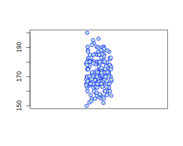
A pch= paraméter lehetséges értékeiről lesz még szó később. Figyeljük meg, hogy a bg= (és a col= is) más jelentésű a par() argumentumaként, és más jelentésű a magas-szintű függvények argumentumában. Minden magas-szintű függvényben, így a strripchart()-ban is a rajzterületen megjelenített grafikus elem háttérszínét és vonalszínét határozza meg. Ez a két argumentum (bg= és col=) tehát általánosan használható minden más magas-szintű függvényben is. A vertical= és a method= azonban inkább az egydimenziós pontdiagramra jellemző beállítások.
Melyek a legfontosabb általános, minden magas-szintű függvényben használható paraméterek:
main=
Az ábra címe, felül, középen, kiemelten fog megjelenni.sub=
Az ábra alcíme, amely az ábra alján jelenik meg.xlab=,ylab=
Az x és y tengely felirata, ha elhagyjuk, akkor az ábrázolt objektum nevét olvashatjuk.xlim=,ylim=
Az x és y tengelyek ábrázolási tartományát határozzuk meg. Értékeik egy-egy kételemű numerikus vektor, melyek az ábrázolt intervallum alsó és felső határait adják.fg=,bg=,col=,col.axis=,col.lab=,col.main=,col.sub=
Az ábra színeinek megadására használt paraméterek.main=
Az ábra címe, felül, középen, kiemelten fog megjelenni.sub=
Az ábra alcíme, amely az ábra alján jelenik meg.xlab=,ylab=
Az x és y tengely felirata, ha elhagyjuk, akkor az ábrázolt objektum nevét olvashatjuk.xlim=,ylim=
Az x és y tengelyek ábrázolási tartományát határozzuk meg. Értékeik egy-egy kételemű numerikus vektor, melyek az ábrázolt intervallum alsó és felső határait adják.axes=
A tengelyek és a rajzterületet szegélyeinek megjelenítését szabályozzuk. Alapértelmezett értékeTRUE. HaFALSEértéket adunk, akkor azaxis()és abox()függvényekkel a tengelyeket és a szegélyt később is megrajzolhatjuk.bty=
A rajzterület szegélyezését állíthatjuk be. Értéke egy karakter lehet, melyek jelentése a következő:"o"teljes keretet rajzol"l"bal oldalt és lent lesz csak szegély"7"fent és jobboldalt rajzol keretet"c"alul, baloldalt és felül lesz rajzol szegélyt"u"baloldalt, alul és jobboldalt kapunk keretet"]"felül, jobboldalt és alul jelenik meg szegély"n"nem jelenít meg szegélyt
las=
Az x és y tengelyek címkéi lehetnek párhuzamosak és merőlegesek a tengelyeikre nézve. A lehetséges eseteknek megfelelően a paraméter értéke lehet:0=párhuzamosak a tengelyükkel (alapértelmezés)1=x-re párhuzamos, y-ra merőleges2=merőlegesek a tengelyükre3=x-re merőleges, y-ra párhuzamos
pch=A kirajzolt pont határozza meg. Értéke vagy egy karakter és ekkor az lesz a megjelenített pont alakja, vagy tipikusan egy skalár 0 és 25 között.cex=,cex.axis=,cex.lab=,cex.main=,cex.sub=
Az egyes összetevők relatív méretefamily=,font=,font.axis=,font.lab=,font.main=,font.sub=
Az egyes összetevők betűtípusaxaxt,yaxt
Az x és y tengely kirajzolását tilthatjuk meg, hanértékkel látjuk el. Alapértelmezett azs, ekkor megrajzolja az illető tengelyt. (Hasonló a szerepe, mint azaxes=argumentumnak.)mgp=c(3,1,0)
A tengely egyes részeinek a rajzterület szélétől mért távolságát meghatározó 3 elemű vektor. Az első érték a tengelyfelirat, a második a tengelycímkék, a harmadik magának a tengely vonalának a margóját adja meg.lab
Háromelemű numerikus vektor, amelynek az első két elemével az x és az y tengely beosztásainak a számát határozhatjuk meg. A tényleges osztásszám az általunk megadott értéktől eltérhet. A harmadik elemet nem veszi figyelembe az R.xaxp, yaxp
Leginkább lekérdezésre szánt 3 elemű numerikus vektor. Az első és második elem a két szélső beosztás értéket adja, a harmadik elem pedig az osztályok számát.xaxs, yaxs
Az alapértelmezettrérték mellett a tengelyek által átfogott intervallum az ábrázolandó adatokból kiszámolt vagy azxlim=,ylim=paraméterekből kapott intervallumnál 4%-al nagyobb lesz. Pontos egyezéshez aziértéket kell megadnunk.
A fenti paraméterek felhasználásával készítsünk egy kicsit szebb ábrát.
library(MASS)
stripchart(x = survey$Height, vertical = T, pch=21, col="blue", bg="lightblue", method = "jitter", main="Főcím: Testmagasság eloszlása", sub="Alcím: Egyetemi hallgatók adatai", ylab="Testmagasság (cm)")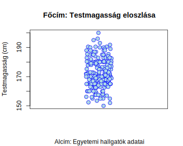
A további szépítéshez a korábban megismert grafikus paramétereket kell használnunk. Érdemes megváltoztatni a margót (mar=), a tengelybeosztás címkéinek írásirányát (las=), a tengelyfeliratok és a tengelybeosztás címkéinek távolságát a tengelyektől (mgp=), valamint a beosztások mértetét (tcl=).
library(MASS)
par(mar=c(3.9, 3, 2, 1))
par(las=1)
par(mgp=c(1.9, 0.1, 0))
par(tcl=0.2)
stripchart(x = survey$Height, vertical = T, pch=21, col="blue", bg="lightblue", method = "jitter", main="Főcím: Testmagasság eloszlása", sub="Alcím: Egyetemi hallgatók adatai", ylab="Testmagasság (cm)")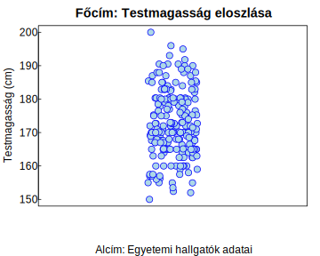
Végül használjuk a szokásos formula argumentumot az x= argumentumban (Height~Sex), amely ebben az esetben a data= argumentum megadását is szükségessé teszi. Az ábrán külön jelennek meg a nők és férfiak testmagasságai. A megjelenítéshez tartozó ylim= paraméteren is változtassunk, az y tengely láthatósági tartományát állítsuk be 140 és 210 közé (ylim=c(140, 210))
library(MASS)
par(mar=c(3.9, 3, 2, 1))
par(las=1)
par(mgp=c(1.9, 0.1, 0))
par(tcl=0.2)
stripchart(x = Height~Sex, data=survey, vertical = T, pch=21, col="blue", bg="lightblue", method = "jitter", main="Főcím: Testmagasság eloszlása", sub="Alcím: Egyetemi hallgatók adatai", ylab="Testmagasság (cm)", ylim=c(140, 210))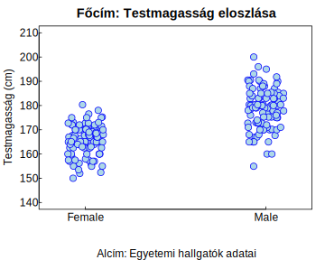
Egy másik példában egy üzletben eladott kalapácsok számát rögzítettük 25 napon keresztül. A method= argumentum "stack" értékével érjük el, hogy egymásra halmozza az azonos pontokat. Ez nagyon jól jöhet diszkrét változók eloszlásának megismeréséhez.
library(extrafont)
# font_import() # 1x kell végrehajtani
# fonts() # tájékozódhatunk az elérhető fontokról
loadfonts(device="win", quiet = T)
par(family="Times New Roman")
mh <- c(10, 10, 6, 12, 6, 9, 16, 20, 11, 10, 11, 11, 9, 12, 11, 7, 10, 11, 14, 21, 12, 6, 10, 11, 6,
10, 10, 6, 12, 6, 9, 16, 20, 11, 10, 11, 11, 9, 12, 11, 7, 10, 11, 14, 21, 12, 6, 10, 11, 6)
stripchart(mh, method="stack", pch=21, cex=1.5, offset=2/5, col="blue", bg="lightblue", axes=F, ylim=c(1,1500000))
axis(1, at = mh)
box()
title(main="Eladások", family="Calibri", cex.main=1.3)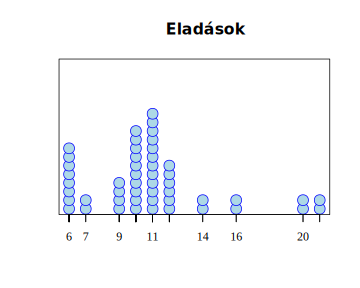
A fenti ábra elkészítéséhez
A fenti ábrában használt globális paramétereket és stripchart() függvényhívásban megjelenő általános argumentumokat minden további ábrában felhasználhatjuk esztétikus grafika létrehozására. Az áttekinthetőség miatt ezeket a továbbiakban mellőzzük, de a publikációban felhasznált ábrák természetesen ezeket a beállításokat nem nélkülözhetik.
7.1.4.2 A plot() függvény
A plot() az R legalapvetőbb függvénye ábrák létrehozására. Egyik legegyszerűbb felhasználása, hogy az x és y tengelyek mentén a függvény bemeneti paramétereiben meghatározott értékpárokhoz (mint x és y értékekhez) egy-egy pontot jelenítsen meg az ábrán (7.7 ábra):
ÁBRA 7.7: Egyszerű kétdimenziós pontdiagram
Az x és y numerikus vektorok 10-10 eleműek, a 7.7 ábrán is 10 pontot látunk. Az első pontnak megfelelő pontkarakter a (21, 51) koordinátájú pontban rajzolódik ki, ezek a koordináták az x és y vektor első elemei. A második kis karika rajzolásához a numerikus vektorok 2. elemeit használja a plot(), ez a (22, 52) koordinátájú pont lesz. A többi 8 pont is hasonlóan, az azonos pozíción lévő vektorelemeknek megfelelő értékpárok alapján jelenik meg az ábrán.
A plot() függvény egyetlen vektorral is hívható:
ÁBRA 7.8: étdimenziós pontdiagram egy vektorból
A 7.8 ábrán a plot() függvény a bemeneti y vektor alapján jelenít meg 10 pontot. A pontok megjelenítéséhez szükséges két koordináta közül most csak az egyik az y koordináta áll rendelkezésre, ezt éppen az y vektor elemei alkotják. Az x koordináták az y vektor indexeiből állnak, amely egy 10 elemű vektor esetén az 1,2, …, 10 elemeket jelenti. Az első ábrázolt pont koordinátái ennek megfelelően az (1, 21), a második (2, 22) és így tovább, az utolsó (10, 30).
A plot() függvény paraméterében a numerikus vektorok helyett faktorok is szerepelhetnek. Ha egyetlen faktorral hívjuk, akkor oszlopdiagramot kapunk, ha faktorral és numerikus vektorral, akkor dobozdiagramot kapunk. Ezeket az eseteket foglalja össze a 7.9 ábra.
layout(matrix(1:4, ncol=2, byrow=T))
x <- rnorm(10)
y <- rnorm(10)
f <- gl(2,3,10)
plot(x, main="Egy változó", xlab="Az x vektor indexei")
plot(f, main="Egy változó", sub="Kategorikus változó", las=1, col="red", pch=16, ylim=c(0, 8))
plot(cbind(x,y), main="Két változó", ylim=c(-3,3), bty="l")
plot(y~f, main="Két változó", xlab="Kategórikus változó", ylab="Kvantitatív változó", ylim=c(-3,3))ÁBRA 7.9: étdimenziós pontdiagram egy vektorból
A 7.9 ábra megjelenítéséhez a plot() függvényekben a stripchart()-nál ismertetett paramétereket használtuk.
A plot() függvény fontos argumentuma a type=, amelyikkel jelentősen módosíthatjuk azonos adatok esetén is a megjelenítést. A lehetséges értékeket és a hozzájuk tartozó megjelenítést a ?? ábra tartalmazza.
layout(matrix(1:9,ncol=3, byrow=T))
x <- 1:10; y <- rpois(10,lambda=5); m <- cbind(x=x,y=y-5)
plot(m,type="p",main='type="p"')
plot(m,type="l",main='type="l"')
plot(m,type="b",main='type="b"')
plot(m,type="c",main='type="c"')
plot(m,type="o",main='type="o"')
plot(m,type="h",main='type="h"')
plot(m,type="s",main='type="s"')
plot(m,type="S",main='type="S"')
plot(m,type="n",main='type="n"')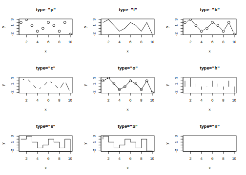
7.1.4.3 A curve() függvény
A curve() függvény segítségével egy x-ben változó függvény grafikonját rajzolhatjuk meg. Az első argumentum kifejezése írja le az ábrázolandó függvényt, amely R-beli matematikai függvények nevét is tartalmazhatja. A from= és to= paraméterek határozzák meg a megjelenítés értelmezési tartományát, az n= paraméter pedig, hogy összesen hány behelyettesítés történjen a függvénybe. A ?? ábra tartalmaz néhány példát a curve() függvény használatára.
par(mfrow=c(2, 2))
curve(12*x**2+3*x-1, from=-10, to=10)
curve(sin, from=-5, to=5)
curve(sin(x)/x, from=-20, to=20, n=200)
curve(dnorm(x, mean=5, sd=2), from=-1, to=11)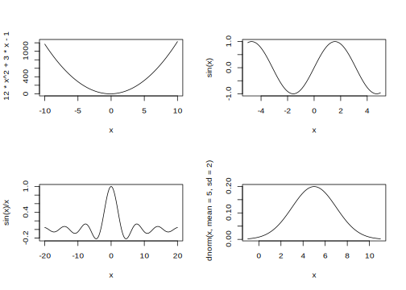
7.1.4.4 A hist() függvény
A hist() függvény segítségével hisztogramot rajzolhatunk, azaz bizonyos osztályintervallumokhoz tartozó téglalapokat láthatunk egymás mellet, melyek területükkel jelzik az osztályintervallum (relatív)gyakoriságát. Az osztályintervallumok létrehozását a bemenő adatvektor alapján a hist() függvény is végezheti, de tipikusabb a breaks= paraméterrel vezérelni az intervallumok létrehozását. A hist() függvény legfontosabb argumentumai a következők:
breaks=
Az értéke lehet:- skalár (ekkor az osztályintervallumok számát jelenti),
- numerikus vektor (az osztályintervallumok határai),
- karaktersorozat (az osztályhatárok megállapítására használt algoritmus neve (“Sturges”, “Scott”, “FD” / “Freedman-Diaconis”) vagy
- egy saját függvény neve, amely az osztályokat létrehozza.
freq=
Gyakoriság (TRUE) vagy relatív gyakoriság (FALSE) megjelenítése között választhatunk a paraméter segítségével. AlapértelmezettenTRUE, de ha nem azonos nagyságúak az osztályintervallumok, akkorFALSElesz az alapértelmezett értéke.right=
Az osztályintervallumok bal vagy jobb oldali zártságát szabályozhatjuk vele. Alapértelmezett értékeTRUE, ami jobb oldali zártságot jelent, azaz ezek az értékek még az osztályhoz tartoznak.include.lowest=
Amennyiben aright=értékeTRUEés a legkisebb érték az első osztályintervallum bal szélső értéke, akkor az argumentumTRUEértéke esetén (ez az alapértelmezett) az osztályintervallumhoz sorolja a függvény ezt az elemet is. Ha aright=értékeFALSE(jobb oldali nyitottság), akkor mindez a legnagyobb értékre és az utolsó osztály jobb szélső értékére értendő.plot=
Ha megváltoztatjuk az alapértelmezettTRUEértéketFALSE-ra, akkor nem történik meg a hisztogram kirajzolása, hanem a visszatérési értékkel (ami egy lista) dolgozhatunk tovább.labels=
Az oszlopok tetején (relatív)gyakoriságot jelenít meg.
par(mfrow=c(2, 2))
x <- c(1, 1, 1, 2, 2, 3)
rx <- rpois(120, lambda=5)
hist(x, ylim=c(0, 4), labels=T)
hist(x, breaks=c(.5, 1.5, 2.5, 3.5), right=TRUE, ylim=c(0,4), labels=T, ylab="gyakoriság")
hist(x, freq=F, breaks=c(.5, 1.5, 2.5, 3.5), right=TRUE, ylim=c(0,.6), labels=T, ylab="relatív gyakoriság",col=rainbow(12))
hist(rx, freq=F, breaks=seq(0, 20, 3), ylab="relatív gyakoriság", col=rainbow(10), main="Hisztogram", ylim=c(0, .2))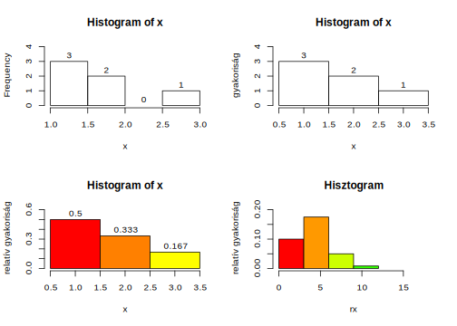
A boxplot() függvény
A boxplot() függvény a hisztogramhoz hasonlóan az adatmegtekintés vizualizálását segíti ún. dobozdiagramok megjelenítésével. A dobozdiagramról a minta terjedelme (legkisebb és legnagyobb értéke), az alsó- és felsőkvartilis, illetve a medián olvasható le. Általában több csoport adatait hasonlítjuk össze a dobozdiagram segítségével.
A boxplot() függvény range paraméterével a kiugró értékek kezelését befolyásolhatjuk.
par(mfrow=c(2,2))
rx <- rchisq(100,10)
boxplot(rx)
boxplot(rx,range=0)
boxplot(count~spray, data=InsectSprays, col="lightgray")
boxplot(decrease~treatment, data=OrchardSprays, col="bisque")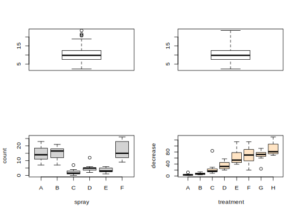
7.1.4.5 A pie() függvény
A kördiagramot a pie() függvénnyel készíthetünk. A radius argumentum a kör sugarát adja meg, a clockwise a körcikkek körbejárási irányát adja meg.
par(mfrow=c(2,2))
pie(rep(1,12), col = rainbow(20))
pie(c(2,3,2,3,5), radius=0.9, clockwise = T)
pie.sales <- c(0.12, 0.3, 0.26, 0.16, 0.04, 0.12)
names(pie.sales) <- c("Honda", "Toyota", "Mazda", "Volkswagen", "Egyéb", "Skoda")
pie(pie.sales)
pie(pie.sales, col = gray(seq(0.4,1.0,length=6)))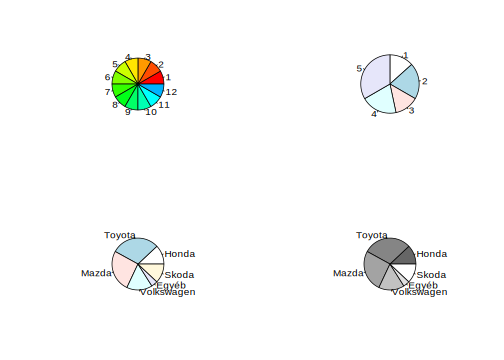
7.1.4.6 A barplot() függvény
A barplot() függvény oszlopdiagram létrehozását teszi lehetővé. Numerikus vektorból vagy mátrixból hozhatunk létre oszlopdiagramot. Használhatjuk a horiz argumentumot, amellyel fekvő vagy álló oszlopdiagramot hozhatunk létre vagy a space-t, amellyel az oszlopok egymás közötti távolságát adhatjuk meg. Mátrix bemenő paraméter esetén az egy oszlopban lévő elemeket egy csoportpa sorolja a box() függvény. A beside argumentum FALSE értéke mellett a csoportok egymás mellett, a csoportok elemei pedig egymás felett jelennek meg. A beside TRUE értéke mellett a csoportok elemei egymás mellett szerepelnek, de a csoportok között nagyobb lesz a távolság. A fentieket szemlélteti a 6.15. ábra.
par(mfrow=c(2, 2))
barplot(c(1:5, 5:1),main="Vektor argumentum\nhoriz=F", col=heat.colors(10))
barplot(rpois(12, lambda=5), main="Vektor argumentum\nhoriz=T", col=heat.colors(12), horiz=T)
m <- matrix(1:12, ncol=3); m## [,1] [,2] [,3]
## [1,] 1 5 9
## [2,] 2 6 10
## [3,] 3 7 11
## [4,] 4 8 12barplot(m, main="Mátrix argumentum\nbeside=F", col=rainbow(4))
barplot(m, main="Mátrix argumentum\nbeside=T, space=c(1,4)", beside=T, space=c(1,4), col=rainbow(4))
7.1.5 Alacsony-szintű rajzfüggvények
Az alacsony-szintű függvények segítségével meglévő ábráinkhoz adhatunk hozzá elemeket. Szöveget írhatunk a külső vagy belső margóra az mtext(), az ábraterületre pedig a text() függvénnyel. Az ábraterültre pontokat helyezhetünk el points(), vonalakat a lines() és az abline() függvénnyel. Továbbá rajzolhatunk téglalapot a rect(), sokszöget a polygon() függvénnyel. Az ábránkra tengelyeket rajzolhatunk az axis(), szegélyeket a box(), jelmagyarázatot a legend(), címet és alcímet a title() függvénnyel.
7.1.5.0.1 Szöveg elhelyezése
Az mtext() függvényben a szöveg helyét a line= argumentum határozza meg: az alapértelmezett 0 segítségével a margóra tudunk írni, de kintebb vagy beljebb is tudunk írni a margóhoz képest pozitív vagy negatív érték megadása esetén. A text() függvényben a szöveg helyét a felhasználó koordinátarendszerében értendő x és y argumentum értékei határozzák meg.
Mindkét függvény esetében az adj argumentum határozza meg a szöveg igazítását, ami tipikusan 0 és 1 közötti numerikus érték, de a legtöbb grafikus eszközön kibővíthetjük ezt a tartományt. A text() függvény esetében ez a paraméter kételemű vektor is lehet, az első érték az x a második az y irányában határozza meg az igazítást. Az mtext() függvény esetében egyetlen érték is elegendő igazításra, a másik pozíció a line= argumentum értékéből következik. Mindezt a @ref(fig:szoveg_elhelyez) ábráról is leolvashatjuk.
plot(1:10, xlab=expression(x[y]), ylab=expression(x^y), type="n")
mtext("mtext(line= -1,side=3)", line=-1, side=3)
mtext("mtext(line=1,side=3,adj=0.2)", line=1, side=3, adj=0.2)
mtext("mtext(line=0,side=4,adj=1)", line=0, side=4, adj=1)
points(2:7, 2:7, pch=3, cex=4, col="red")
text(2, 2, "text(2,2)")
text(3, 3, "text(6,6,adj=c(0,0))", adj=c(0,0))
text(4, 4, "text(4,4,adj=c(1,0))", adj=c(1,0))
text(5, 5, "text(5,5,adj=c(0,1))", adj=c(0,1))
text(6, 6, "text(6,6,adj=c(1,1))", adj=c(1,1))
text(7, 7, "text(7,7,adj=c(0.5,0.5))", adj=c(.5,.5))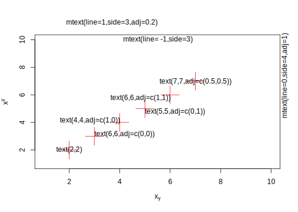
Az x és y tengely feliratában alsó és felső indexet is használhatunk. Ehhez az expression() függvényt használjuk fel, amellyel kifejezéseket hozhatunk létre az R-ben. Alsó indexek írására a szögletes zárójelet (x[y]), felső indexre a hatványozás jelét (x^y) használhatjuk.
A megjelenítendő szöveg betűtípusát is megváltoztathatjuk a font= és a family= argumentumok segítségével. A font= értékei: 1=normál, 2=félkövér,3=dőlt és 4=félkövér/dőlt. A family= argumentum egy betűcsalád nevét tartalmazhatja, alapértelmezett értékei a ”serif”, ”sans”, ”mono” és ”symbol” lehetnek. A számítógépen egyéb betűcsaládok a windowsFonts() és a windowFont() függvények használata után lesznek elérhetőek az R-ben, Windows platformon. Érdemes kipróbálni a platformfüggetlen extrafont csomagot a fontok kezelésére.
windowsFonts(font.comic = windowsFont("Comic Sans MS"), font.verdana = windowsFont("Verdana"),
font.trebuchet = windowsFont("Trebuchet MS"), font.book.antiqua = windowsFont("Book Antiqua"))
plot(1:10, type="n", xlab="", ylab="")
par(cex=1.4)
text(2,8, "serif", family="serif", font=1)
text(2,6, "sans", family="sans", font=2)
text(2,4, "mono", family="mono", font=3)
text(2,2, "symbol", family="symbol", font=4)
text(8,8, "Comic Sans MS", family="font.comic", font=1)
text(8,6, "Verdana", family="font.verdana", font=2)
text(8,4, "Trebuchet MS", family="font.trebuchet", font=3)
text(8,2, "Book Antiqua", family="font.book.antiqua", font=4)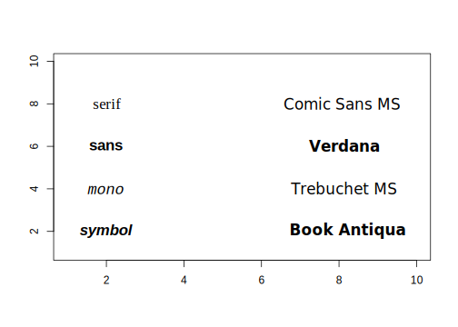
7.1.5.1 Pontok, vonalak
A points() függvény x= és y= paramétere a megjelenítendő pontok koordinátáit tartalmazzák, míg a lines() függvény ugyanezen paraméterek mellett egyenes szakaszokkal köti össze pontokat. A megjelenítendő pontok alakját a pch=, a vonalak típusát pedig a lty= paraméter határozza meg.
plot(1:10, type="n")
x <- c(1, 2, 3, 1, 2, 1, 3, 2, 1, 2)
points(1:10, x+7, pch="*", cex=2)
lines(1:10, x+4.4, lty=1)
lines(1:10, x+4, lty=2, lwd=1.5)
lines(1:10, x+3.6, lty=3, lwd=2)
lines(1:10, x+3.2, lty=4, lwd=2.5)
lines(1:10, x+2.8, lty=5, lwd=3)
lines(1:10, x+2.2, lty=6, lwd=3.5)
points(1:10, x, pch=16)
lines(1:10, x, lty=5)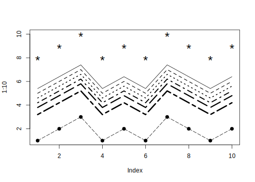
Egyeneseket az abline() segítségével is létrehozhatunk. Legfontosabb argumentumok az a= és a b=, amelyek az y tengellyel való metszéspontot és az egyenes meredekséget adják meg. Függőleges és vízszintes egyeneseket is rajzolhatunk a v= és h= paraméterek megadásával.
plot(-4:5,-4:5, type="n",xlab="",ylab="")
abline(h=0, v=0, col = "gray60")
text(0.1,0, "abline ( h = 0 )",col="gray60",adj=c(0,-0.1))
text(0,0.1, "abline ( v = 0 )",col="gray60",adj=c(0,-0.1),srt=90)
abline(h = -3:4, v = -3:4, col = "lightgray", lty=3)
abline(a=1, b=2, col="blue")
text(1,3,"abline( 1, 2 )", col="blue",adj=c(-.1,-.1))
abline(a=-2, b=-1, col="blue")
text(1,-3,"abline( -2, -1 )", col="blue",adj=c(-.1,-.1))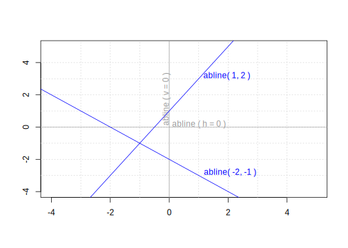
7.1.5.2 Téglalapok, poligonok, nyilak
A rect() függvénnyel téglalapot rajzolhatunk az ábraterületre. A téglalapok bal alsó és jobb felső sarkának x és y koordinátáját kell megadnunk, ezek rendre: xleft=, ybottom=, xright=, ytop=.
plot(100:500,100:500, type="n", xlab="", ylab="")
x <- runif(50)*350
y <- runif(50)*330
rect(100+x, 100+y, 150+x, 170+y, col=rainbow(11, start=.7, end=.1), border=gray(x/400), lwd=x%%10)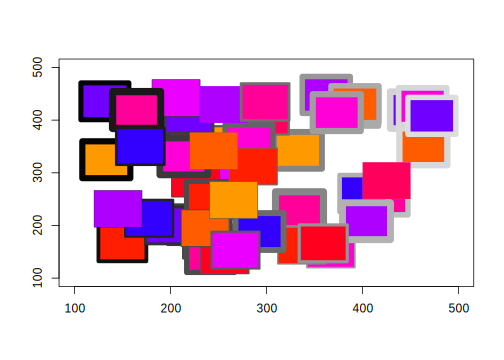
A polygon() függvény tetszőleges egyenesekkel határolt síkidomok létrehozásáért felelős. Az x= és y= paraméterében várja a csúcspontok koordinátáit. A lenti példában a vonalak rajzolására használatos segments() függvény is bemutatásra kerül, azt láthatjuk, hogy a polygon() függvény argumentuma, hogyan feleltethető meg a segments() függvény bemenő paraméterének.
my_segments <- function(x, y) {
i <- 1:(length(x)-1)
segments(x[i], y[i], x[i+1], y[i+1])
segments(x[length(x)], y[length(x)], x[1], y[1])
}
plot(-4:5,-4:5, type="n", xlab="", ylab="")
abline(h=0, v=0, col="gray60")
abline(h=-4:5, v=-4:5, col="lightgray", lty=3)
x <- c(-4, -1, 0)
y <- c(1, 2, 1)
polygon(x, y, col="gray")
y <- y+2
my_segments(x, y)
x <- c(1, 2, 3, 4)
y <- c(1, 2, 2, 1)
polygon(x, y, col="gray")
y <- y+2
my_segments(x, y)
my_func <- function(x) {
return (5*dnorm(x, mean=-2, sd=.6)-4)
}
curve(my_func, from=-4, to=0, add=T)
xp <- seq(-4,-2.5,.01)
polygon(c(xp, -2.5), c(my_func(xp), -4), col="red")
curve(my_func(x-5), from=1, to=5, add=T)
xp <- seq(2, 4, .01)
polygon(c(2, xp, 4), c(-4, my_func(xp-5), -4), col="red")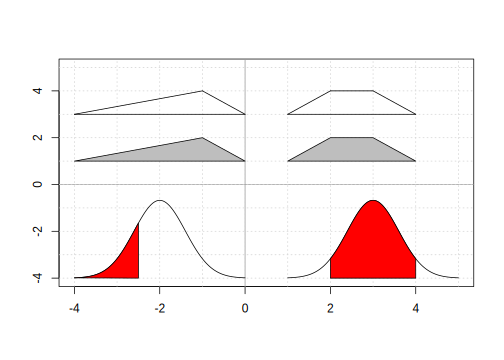
7.1.5.3 Egyéb kiegészítők
Ha ábránk létrehozása során korábban nem gondoskodtunk cím/alcím, tengelyek, szegély vagy jelmagyarázat megrajzolásáról, akkor alacsony-szintű rajzfüggvényekkel utólag is hozzáadhatjuk ezeket a grafikánkhoz.
A tilte() függvény segítségével különböző címkéket helyezhetünk el az kész ábrán. A fontosabb argumentumai a következők:
main=,sub=
Az ábra címének és alcímének meghatározására használjuk.xlab=,ylab=
Tengelyfeliratok hozzáadása.line=
Az alapértelmezett szövegpozíciót írhatjuk felül, ha meghatározzuk a szövegsor sorszámát.outer=
Az ábra címét a külső margóra írhatjuk haTRUEértéket adunk meg.
A box() függvény a rajzterület keretezésére szolgál, legfontosabb argumentuma:
which=
A bekeretezendő terület meghatározása. Értékei lehetnek:"plot"rajzterület szegélyezése"figure"ábraterület szegélyezése"inner"több ábra esetén az ábraterületeket fogja össze"outer"az eszközfelület szegélyezése
A tengelyek megjelenítését szabályzó grafikai paraméterek, az axis() függvény használata során adhatók meg. Az axis() függvény fontos argumentumai:
side=
A rajzolandó tengely helye: 1=lennt, 2=balra, 3=fennt, 4=jobbra..at=NULL
A beosztások helyét határozza meg. Ha az értéke NULL, akkor automatikusan számolja az R, egyébként a megadott numerikus vektor elemeinek megfelelő helyre kerül beosztás.labels=
A beosztások címkéit határozza meg.
Jelmagyarázat többnyire a rajzterületen belül foglal helyet, a pozícióját is a felhasználói koordinátákban kell megadni. A jelmagyarázat létrehozását számos paraméter segíti, de az ábrán szereplő és a jelmagyarázatban használt jelek közötti összhangot nekünk kell megteremteni, az R semmilyen ellenőrzést nem végez ezzel kapcsolatban.
A legend() függvény argumentumai:
x=,y=
A jelmagyarázat bal felső sarkának a koordinátái a rajzterület koordintáiban mérve. Azxargumentum karakteres értékével az igazítást adhatjuk meg:bottomright,bottom,bottomleft,left,topleft,top,topright,right,center.legend=
A jelmagyarázat szövegét tartalmazó karakteres vektor.fill=,lty=,lwd=,pch=
A jelmagyarázat szövegét és az ábrán használt jeleket összekötő szimbólumok létrehozására használható argumentumok.inset=0
Ha kulcsszavakat használunk az igazításra, akkor a margótól mért távolságot itt adhatjuk meg.merge=0
Ha pontokat és vonalakat is használunk a jelmagyarázatban, akkorTRUEérték mellett ezeket kombinálja a megjelenítéskor.horiz=FALSE
A jelmagyarázat tájolását befolyásoló logikai paraméter.ncol=1
A jelmagyarázat oszlopainak a számát határozza meg.text.col=,bg=
A szöveg színe és a háttérszín jelmagyarázatban.
op<-par()
par(oma=c(.5,.5,2,.5))
par(mfrow=c(2,2))
x<-rnorm(10)
plot(x,main="",axes=F,xlab="",ylab="",col=gray(0.7))
text(5.5,0,"Alapértelmezett",font=2)
title(main="Cím a külső margón",outer=T,line=0.2)
title(main="Cím a belső margón")
title(sub="ALCÍM")
title(xlab="x",ylab="y")
box("outer",lty=1,col=grey(.2))
box("inner",lty=2,col=grey(.4))
box("figure",lty=3,col=grey(.6))
box("plot",lty=4,col=grey(.8))
axis(1, at=1:10);axis(2)
par(xaxs="i")
par(yaxs="i")
par(mgp=c(2,.5,0))
plot(x,main='xaxs="i",yaxs="i",mgp=c(2,.5,0)',axes=F,
xlab="axis(1,at=1:10,tcl=.3)",ylab="")
box("plot",lty=4,col=grey(.8))
axis(1,at=1:10,tcl=.3)
par(xaxs="r")
par(yaxs="r")
par(mgp=c(3,1,-.2))
plot(x,main='xaxs="r",yaxs="r",mgp=c(3,1,-.2)',axes=F,xlab="axis(1,at=3:8,labels=LETTERS[1:6])",ylab="")
box("plot",lty=4,col=grey(.8))
axis(1,at=3:8,labels=LETTERS[1:6])
axis(2)
axis(4)
par(mgp=c(3,1,0))
par(mar=c(1,1,1,1))
plot(1:10,main="",axes=F,xlab="",ylab="",type="n")
box("figure",lty=3,col=grey(.6))
box("plot",lty=4,col=grey(.8))
legend("topleft",LETTERS[1:3],lw=1:3,inset=.1)
legend("top",LETTERS[1:3],lty=1:3,inset=.1)
legend("topright",LETTERS[1:3],lty=1:3,pch=0:3,inset=.05)
legend("right",LETTERS[1:3],lw=1:3,pch=0:3)
legend("bottomright",LETTERS[1:3],fill=2:4,text.col=2:4)
legend(1,7, as.character(0:25), pch = 0:25,ncol=4,cex=1.2)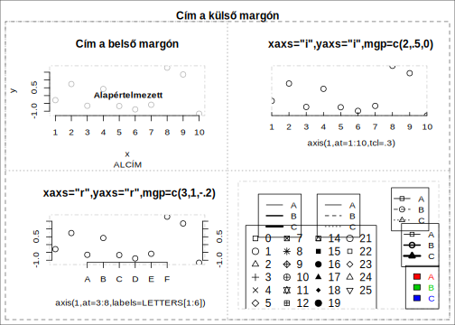
7.1.6 Interaktív grafikus függvények
Az R hagyományos grafikus rendszere elsősorban statikus ábrák létrehozását támogatja, a kész grafikán további interaktív műveletekre csak korlátozottan van lehetőség. Ezek közül most a locator() és az identify() függvényeket tekintjük át.
A locator() függvény lehetővé teszi, hogy a felhasználó a rajzterületen az egér bal gombjával kijelöljön egy vagy több pontot. A függvény visszatérési értéke egy lista, amely a megjelölt pontok x és y koordinátáit sorolja fel.
A locator() függvény fontosabb argumentumai:
n=A meghatározandó pontok maximális számát adhatjuk meg. Alapértelmezetten 512 pont helyét kaphatjuk meg.type=Értéke az ”n”, ”p”, ”l” vagy ”o” karakter valamelyike lehet. Az alapértelmezett ”n” esetében az egérkattintás után nem történik megjelenítés, míg ”p” és ”o” hatására egy pont fog megjelenni, ”l” vagy ”o” estén pedig vonal fogja összekötni a megjelölt helyeket.
Az identify() függvény a rajzterületen megjelenő adatpontokhoz rendel címkét. A locator() függvényhez hasonlóan az egér bal gombjával itt is ki kell jelölni egy pontot a rajzterületen, majd a függvény a megjelölt ponthoz legközelebb lévő adatponthoz rendel egy címkét. Az indentify() függvény visszatérési értéke az azonosított adatpontok indexe.
library(MASS)
plot(mammals$body, mammals$brain, log="xy")
identify(mammals$body, mammals$brain, row.names(mammals), n=10)Az identify() függvény fontosabb argumentumai:
x=,y=
Numerikus vektorok, amelyek az ábra adatpontjainak x és y koordinátáit határozzák meg.labels=
Karakteres vektor, amely egyes adatpontok címkéit tartalmazza. Az x és y argumentumokkal azonos hosszú vektor, alapértelmezetten sorszámokat tartalmaz.pos=FALSE
Ha FALSE az értéke, akkor a függvény az azonosított adatpontok indexével fog visszatérni. Ha TRUE, akkor egy listával, amely az ind elemében az indexeket, pos elemében pedig a címke adatponthoz viszonyított helyét tartalmazza (1=lennt, 2=balra, 3=fennt, 4=jobbra, ill. 0=ekkor az atpen=TRUE volt)n=
A megjelelölendő pontok száma.plot=TRUE
Logikai érték, amely ha TRUE (ez az alapértelmezett), akkor megjelenít címkéket, egyébként nem.atpen=FALSE
A címke pozíciója TRUE érték esetén az egérkattintás helye lesz, FALSE esetén automatikusan kerül meghatározásra.offset=0.5
A címke és az adatpont távolsága. A numerikus érték a karakterszélességhez mért. Az atpen=FALSE esetén nem használja az R.tolarence=0.25
Inch-ben mért numerikus érték, amely az egérkattintás és a „közeli” adatpont közötti maximális távolságot jelenti.